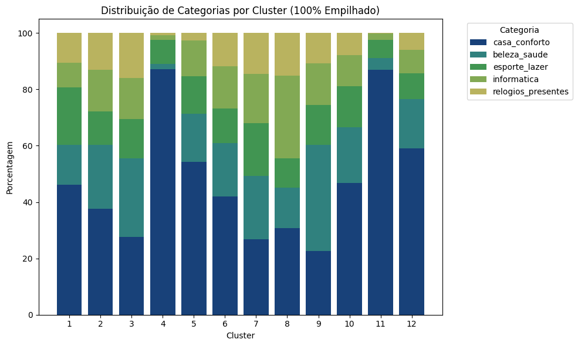
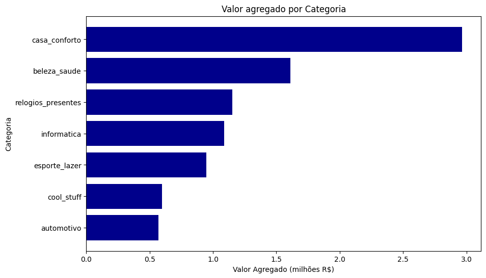
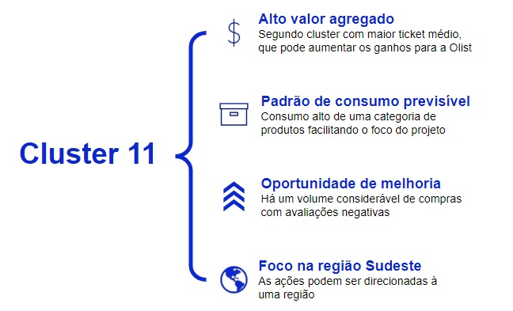
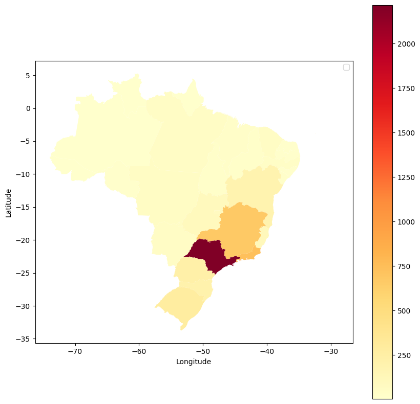
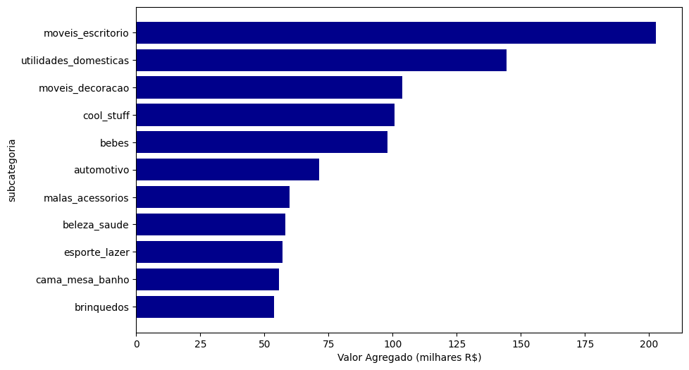

Análise da base de clientes Olist
Projeto integrador - 3° Trimestre
André Dambry, Arnaldo Chebl, Giovanna Mendes, Isabella Gobbi, Tiago Pardo
Objetivos do projeto
- Explorar a base de clientes da olist e encontrar padrões significativos
- Desenhar a persona de acordo com o cluster escolhido e seus respectivos padrões
- Identificar as dores da persona à partir de seus dados
- Definir próximos passos para a olist e “How might we?”
Agenda
- Análise exploratória
- Definição do Cluster
Utilizando o método do cotovelo, é possivel observar que o número ótimo de clusters seria 12
- Para auxiliar no entendimento da base de clientes, é feita uma segmentação dos clientes com clusterização
- A clusterização foi feita pelo algoritmo de Machine Learning K-prototypes
- O método do cotovelo é uma visualização que permite definir o número ótimo de clusters
Os clientes são concentrados na região sudeste, tendo uma participação considerável nos clusters


A categoria casa conforto é a mais comprada da Olist, além de trazer mais valor agregado
O cluster 8 e 11 também apresentam maior ticket médio e contém avaliações mistas
Ticket médio de cada perfil de cliente (escala logarítmica)
O cluster 11 apresenta características interessantes para a construção de uma persona

A base de clientes do cluster 11 se concentra na região Sudeste, principalmente em São Paulo
Densidade de clientes por região

A subcategoria de produtos com maior valor agregado do cluster 11 são móveis de escritório
Valor agregado por subcategoria de produtos de casa

Persona
Clara é uma pessoa que faz parte da base de clientes do cluster 11
- Analista de Marketing
- 27 anos
- Renda mensal de 7 mil reais
- Se mudou de São Paulo recentemente para trabalhar em um modelo híbrido
- Precisa de mobiliar sua nova casa e seu escritório, com móveis baratos e de alta qualidade
- Gosta de ambientes organizados e funcionais para facilitar sua rotina corrida e promover seu bem-estar